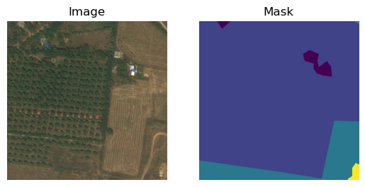

import torch
from torch import nn
from torch.utils.data import Dataset, DataLoader
from torchvision import transforms, models
from PIL import Image
import numpy as np
import os
import matplotlib.pyplot as pltDeepGlobe Land Cover Classification with PyTorch
In this notebook, we’ll explore how to use PyTorch for land cover classification using a small subset of the DeepGlobe Land Cover dataset. We’ll build and train several models:
- An MLP that classifies each pixel individually (flattened images).
- An MLP that classifies each pixel using local crops (24x24 patches).
- A simple CNN for segmentation (fully convolutional, no pooling).
- A demonstration of ResNet-FCN for semantic segmentation.
Let’s get started!
Dataset Preparation
This demo uses the DeepGlobe land-cover dataset on Hugging Face. It has 803 image/mask pairs and downloads about 2.1 GB on first use. Install the datasets package if needed (pip install datasets).
Let’s define a custom Dataset class to load the images and masks, applying necessary transformations.
from datasets import load_dataset
# The first run downloads about 2.1 GB from Hugging Face.
dataset = load_dataset('ratnaonline1/deepglobe-land-cover-classification-dataset')
splits = dataset['train'].train_test_split(test_size=0.2, seed=42)class DeepGlobeDataset(Dataset):
def __init__(self, examples, crop_size):
self.examples = examples
self.crop_size = crop_size
self.colors = np.array([
[0, 255, 255], # urban_land
[255, 255, 0], # agriculture_land
[255, 0, 255], # rangeland
[0, 255, 0], # forest_land
[0, 0, 255], # water
[255, 255, 255], # barren_land
[0, 0, 0] # unknown
])
self.lookup_table = np.full((256, 256, 256), 6, dtype=np.uint8)
for idx, color in enumerate(self.colors):
self.lookup_table[color[0], color[1], color[2]] = idx
def __len__(self):
return len(self.examples)
def __getitem__(self, idx):
example = self.examples[idx]
image = np.asarray(example['pixel_values'].convert('RGB'))
mask = np.asarray(example['mask'])
crop_height, crop_width = self.crop_size
height, width = image.shape[:2]
top = np.random.randint(0, height - crop_height + 1)
left = np.random.randint(0, width - crop_width + 1)
image = image[top:top + crop_height, left:left + crop_width]
mask = mask[top:top + crop_height, left:left + crop_width]
if mask.ndim == 2:
mask_class = mask.astype(np.uint8)
else:
mask_class = self.lookup_table[mask[:, :, 0], mask[:, :, 1], mask[:, :, 2]]
image_tensor = torch.from_numpy(image.copy()).permute(2, 0, 1).float()
mask_tensor = torch.from_numpy(mask_class.copy()).long()
return image_tensor, mask_tensorNow, let’s create instances of our dataset and data loaders.
train_dataset = DeepGlobeDataset(splits['train'], crop_size=(512, 512))image, mask = train_dataset[0]
plt.subplot(121)
plt.imshow(image.permute(1, 2,0).numpy()/255.)
plt.axis('off')
plt.title('Image')
plt.subplot(122)
plt.imshow(mask)
plt.axis('off')
plt.title('Mask')
plt.show()

Model 1: MLP that Classifies Each Pixel Individually (Flattened Images)
In this model, we’ll flatten the entire image and treat it as a single vector input to an MLP. Each pixel will be classified independently.
# Create the dataset
train_dataset = DeepGlobeDataset(image_dir, mask_dir, crop_size=(1000,1000))
test_dataset = DeepGlobeDataset(test_image_dir, test_mask_dir, crop_size=(1000,1000))train_dataset = DeepGlobeDataset(splits['train'], crop_size=(1000, 1000))
test_dataset = DeepGlobeDataset(splits['test'], crop_size=(1000, 1000))class MLP(nn.Module):
def __init__(self, num_inputs, num_classes):
super(MLP, self).__init__()
self.fc1 = nn.Linear(num_inputs, 30)
self.fc2 = nn.Linear(30,30)
self.fc3 = nn.Linear(30, num_classes)
def forward(self, x):
x = torch.relu(self.fc1(x))
x = torch.relu(self.fc2(x))
x = self.fc3(x)
return x
num_inputs = 3 # number of input features
num_classes = 7 # Number of land cover classes
# Instantiate the model
model1 = MLP(3, num_classes)device = torch.device('cuda' if torch.cuda.is_available() else 'cpu')
print(f"Using {device} for training")Using cuda for trainingmodel1 = model1.to(device)Define loss function and optimizer.
criterion = nn.CrossEntropyLoss()
optimizer = torch.optim.Adam(model1.parameters(), lr=0.01) # IMportant model is on the right device when accessing its parametersTraining Loop for Model 1
num_epochs = 5
import tqdm.auto as tq
for epoch in tq.trange(num_epochs):
model1.train()
running_loss = 0.0
for images, masks in tq.tqdm(train_loader):
images= images.to(device) # Move images to the same device as the model
masks = masks.to(device) # Move masks to the same device as the model
# Flatten images
images = images.view(-1, 3) # Flatten the entire minibatch
# Flatten masks
masks = masks.view(-1)
# Forward pass
outputs = model1(images)
# Since outputs are of shape (batch_size, num_classes), need to adjust masks
loss = criterion(outputs, masks)
# Backward and optimize
optimizer.zero_grad()
loss.backward()
optimizer.step()
running_loss += loss.item()
print(f'Epoch [{epoch+1}/{num_epochs}], Loss: {running_loss/len(train_loader):.4f}')Exception ignored in: <function _MultiProcessingDataLoaderIter.__del__ at 0x773974137e20>
Traceback (most recent call last):
File "/opt/anaconda3/envs/cse620b-shared/lib/python3.11/site-packages/torch/utils/data/dataloader.py", line 1604, in __del__
self._shutdown_workers()
File "/opt/anaconda3/envs/cse620b-shared/lib/python3.11/site-packages/torch/utils/data/dataloader.py", line 1568, in _shutdown_workers
w.join(timeout=_utils.MP_STATUS_CHECK_INTERVAL)
File "/opt/anaconda3/envs/cse620b-shared/lib/python3.11/multiprocessing/process.py", line 149, in join
res = self._popen.wait(timeout)
^^^^^^^^^^^^^^^^^^^^^^^^^
File "/opt/anaconda3/envs/cse620b-shared/lib/python3.11/multiprocessing/popen_fork.py", line 40, in wait
if not wait([self.sentinel], timeout):
^^^^^^^^^^^^^^^^^^^^^^^^^^^^^^
File "/opt/anaconda3/envs/cse620b-shared/lib/python3.11/multiprocessing/connection.py", line 948, in wait
ready = selector.select(timeout)
^^^^^^^^^^^^^^^^^^^^^^^^
File "/opt/anaconda3/envs/cse620b-shared/lib/python3.11/selectors.py", line 415, in select
fd_event_list = self._selector.poll(timeout)
^^^^^^^^^^^^^^^^^^^^^^^^^^^^
KeyboardInterrupt: Epoch [1/5], Loss: 1.3187
Epoch [2/5], Loss: 1.5082
Epoch [3/5], Loss: 1.6306
Epoch [4/5], Loss: 1.4988
Epoch [5/5], Loss: 1.4194def evaluate(model, data_loader, criterion):
model.eval() # Set the model to evaluation mode
running_loss = 0.0
total_correct = 0
total_pixels = 0
with torch.no_grad(): # Disable gradient computation
for images, masks in data_loader:
images = images.to(device)
masks = masks.to(device)
# Flatten images and masks just like in training
images = images.view(-1, 3)
masks = masks.view(-1)
# Forward pass
outputs = model(images)
loss = criterion(outputs, masks)
# Accumulate loss
running_loss += loss.item()
# Predictions and accuracy
_, predicted = torch.max(outputs, 1)
total_correct += (predicted == masks).sum().item()
total_pixels += masks.size(0)
avg_loss = running_loss / len(data_loader)
accuracy = 100 * total_correct / total_pixels
print(f'Validation Loss: {avg_loss:.4f}, Accuracy: {accuracy:.2f}%')
return avg_loss, accuracyevaluate(model1, test_loader, criterion)Validation Loss: 1.5087, Accuracy: 26.25%(1.5087146759033203, 26.2487)Model 2: MLP that Classifies Each Pixel Using 24x24 Crops
In this model, we’ll use local patches (crops) of the image to classify each pixel, allowing the model to consider local context.
Note: Due to time constraints and the complexity of sourcing an optimal dataset for this demonstration, the code below has not been fully debugged or tested prior to class. Please consider this as a foundational framework that we’ll refine and troubleshoot together during our session.
class MLPCrops(nn.Module):
def __init__(self, input_size, num_classes):
super(MLPCrops, self).__init__()
self.fc1 = nn.Linear(input_size, 256)
self.fc2 = nn.Linear(256, num_classes)
def forward(self, x):
# x shape: (batch_size, channels, height, width)
x = x.view(x.size(0), -1) # Flatten
x = torch.relu(self.fc1(x))
x = self.fc2(x)
return x
# Input size remains the same
model2 = MLPCrops(input_size, num_classes)
# Define loss function and optimizer
criterion = nn.CrossEntropyLoss()
optimizer = torch.optim.Adam(model2.parameters(), lr=0.001)Training Loop for Model 2
num_epochs = 5
for epoch in range(num_epochs):
model2.train()
running_loss = 0.0
for images, masks in train_loader:
# Flatten images
images = images.view(images.size(0), -1)
# For masks, we can use the center pixel as the target
center_pixel = masks[:, crop_size[0]//2, crop_size[1]//2]
# Forward pass
outputs = model2(images)
# outputs shape: (batch_size, num_classes)
loss = criterion(outputs, center_pixel)
# Backward and optimize
optimizer.zero_grad()
loss.backward()
optimizer.step()
running_loss += loss.item()
print(f'Epoch [{epoch+1}/{num_epochs}], Loss: {running_loss/len(train_loader):.4f}')Note: This model uses local context around each pixel but still outputs a single class per crop.
Model 3: Simple CNN for Segmentation (Fully Convolutional, No Pooling)
Now we’ll build a simple CNN that performs pixel-wise classification over the entire image.
class SimpleCNN(nn.Module):
def __init__(self, num_classes):
super(SimpleCNN, self).__init__()
self.conv1 = nn.Conv2d(3, 16, kernel_size=3, padding=1)
self.conv2 = nn.Conv2d(16, num_classes, kernel_size=3, padding=1)
def forward(self, x):
# x shape: (batch_size, 3, height, width)
x = torch.relu(self.conv1(x))
x = self.conv2(x)
return x # Output shape: (batch_size, num_classes, height, width)
# Instantiate the model
model3 = SimpleCNN(num_classes)
# Define loss function and optimizer
criterion = nn.CrossEntropyLoss()
optimizer = torch.optim.Adam(model3.parameters(), lr=0.001)Training Loop for Model 3
num_epochs = 5
for epoch in range(num_epochs):
model3.train()
running_loss = 0.0
for images, masks in train_loader:
# Forward pass
outputs = model3(images)
# outputs shape: (batch_size, num_classes, height, width)
# masks shape: (batch_size, height, width)
loss = criterion(outputs, masks)
# Backward and optimize
optimizer.zero_grad()
loss.backward()
optimizer.step()
running_loss += loss.item()
print(f'Epoch [{epoch+1}/{num_epochs}], Loss: {running_loss/len(train_loader):.4f}')Note: This CNN preserves spatial dimensions and outputs a class prediction for each pixel.
Model 4: ResNet-FCN for Semantic Segmentation
Finally, we’ll use a pre-trained ResNet model with a Fully Convolutional Network (FCN) head for segmentation.
from torchvision.models.segmentation import fcn_resnet50
# Load a pre-trained FCN model
model4 = fcn_resnet50(pretrained=True)
# Adjust the classifier to output num_classes
model4.classifier[4] = nn.Conv2d(512, num_classes, kernel_size=1)
# Define loss function and optimizer
criterion = nn.CrossEntropyLoss()
optimizer = torch.optim.Adam(model4.parameters(), lr=0.0001)Training Loop for Model 4
num_epochs = 5
for epoch in range(num_epochs):
model4.train()
running_loss = 0.0
for images, masks in train_loader:
# Forward pass
outputs = model4(images)['out']
# outputs shape: (batch_size, num_classes, height, width)
# masks shape: (batch_size, height, width)
loss = criterion(outputs, masks)
# Backward and optimize
optimizer.zero_grad()
loss.backward()
optimizer.step()
running_loss += loss.item()
print(f'Epoch [{epoch+1}/{num_epochs}], Loss: {running_loss/len(train_loader):.4f}')Explanation:
- ResNet-FCN: Combines a ResNet backbone for feature extraction with an FCN head for pixel-wise classification.
- Transfer Learning: We use a pre-trained model to leverage learned features and adjust the final layer to our number of classes.
- Advantages: More powerful than previous models, capable of capturing complex patterns in the data.
Visualization of Results
Let’s visualize some predictions from our models.
def visualize_predictions(model, dataset, index=0):
model.eval()
image, mask = dataset[index]
image = image.unsqueeze(0) # Add batch dimension
with torch.no_grad():
output = model(image)
if isinstance(output, dict):
output = output['out']
preds = torch.argmax(output, dim=1).squeeze(0)
# Convert tensors to numpy arrays for plotting
image_np = image.squeeze(0).permute(1, 2, 0).numpy()
mask_np = mask.numpy()
preds_np = preds.numpy()
# Plotting
plt.figure(figsize=(15,5))
plt.subplot(1,3,1)
plt.title('Input Image')
plt.imshow(image_np)
plt.axis('off')
plt.subplot(1,3,2)
plt.title('Ground Truth')
plt.imshow(mask_np, cmap='jet')
plt.axis('off')
plt.subplot(1,3,3)
plt.title('Predicted Mask')
plt.imshow(preds_np, cmap='jet')
plt.axis('off')
plt.show()# Visualize predictions from Model 3 (SimpleCNN)
visualize_predictions(model3, train_dataset)Note: You can replace model3 with model4 to visualize predictions from the ResNet-FCN model.
Conclusion
In this notebook, we explored different approaches to land cover classification using PyTorch:
- MLP with Flattened Images: Simple but loses spatial information.
- MLP with Crops: Considers local context but limited in capturing complex spatial patterns.
- Simple CNN: Preserves spatial information and allows for pixel-wise classification.
- ResNet-FCN: Advanced model leveraging transfer learning for better performance.
This demonstrates how different architectures can be applied to the task of semantic segmentation in remote sensing.